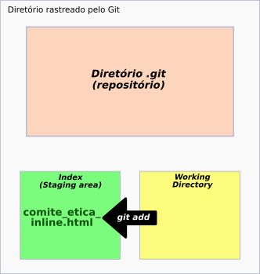
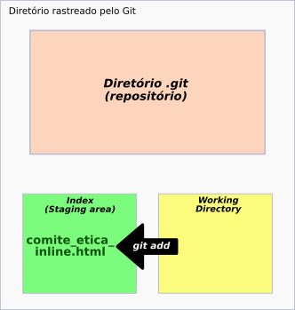

Atenção!
Esse comando é recomendado apenas para uso em arquivos locais, ou seja, para os arquivos que estão somente na sua máquina e não em um repositório remoto.
Modo de usar o reset: padrão ou mixed
Esse comando pode ser usado para retirar arquivos do index (a "sala de espera" do git).

Lembrando que os arquivos que estão no index são aqueles em que foram usados o comando git add, mas que ainda não receberam um commit.
Sendo assim, usamos:
$ git reset <nome_do_arquivo>
- $ indica que você deve usar o usuário comum para fazer essa operação.
- digite o nome do arquivo sem os sinais < e >.
que tem o mesmo valor do comando
$ git reset --mixed <nome_do_arquivo>
Quando não é especificado o modo, o Git usarão o padrão, que é o mixed.
Exemplo:
Vamos supor que eu tenho, no meu projeto, um arquivo já rastreado pelo Git, mas que foi modificado.


E acabei mandando-o para o index
 

Entretanto, não era para esse arquivo estar no index pois ainda preciso fazer outras alterações nele.
Sendo assim, para retirá-lo, uso o comando
$ git reset comite_etica_inline.html

Modo de usar o reset: soft
Esse modo de usar o comando reset serve apenas para alterar o ponteiro head:
$ git reset --soft <chave_do_commit>
- O HEAD é um ponteiro no branch que normalmente aponta para o último commit feito.
Exemplo:
Tenho os seguintes commits no meu projeto:
Agora, atenção ao arquivo comite_etica_inline.html que estava na seguinte situação no commit 669629.
E passou para a situação abaixo no commit 9e8cf9
Vamos voltar o ponteiro head ao commit selecionado na imagem abaixo, pois pretendo refazer os commits que estão acima deste, sem de fato, mudar o projeto e tudo o que foi feito até agora.
Sendo assim, fazemos
$ git reset --soft b240d3c43a
Verificando os commits é possível perceber o deslocamento do ponteiro head para onde queríamos.
Verificando o estado do Git, podemos ver que os dois arquivos que foram inseridos nos commits posteriores ao nosso head atual aparecem como novos arquivos no index.
No log anterior (antes do reset soft), tínhamos
No fluxo atual do git, temos
Aqui é importante notar que o área working directory não foi alterada.
Ou seja, o arquivo comite_etica_inline.html não voltou a ter a parte que retiramos dele, embora tenhamos voltado a um commit anterior a essa retirada.
Confirmando que o comando reset --soft não interfere no working directory.
E embora ele adicione os arquivos que receberam algum commit anteriormente ao index, se houver algum arquivo no index antes do comando reset --soft, esse arquivo é mantido.
Exemplo:
Esse comando é muito usado quando você fez uma sequência de commits repetitivos ou com diversas e pequenas alterações que poderiam ser resumidas em um único commit.
Modo de usar o reset: hard
A principal diferença entre os comandos reset --soft e reset --hard é a interferência no working directory e no index.
Esse comando é usado em casos em que você bagunçou o código e precisa desfazer tudo o que fez. Porém é preciso ter cuidado com esse ele, pois se você apagar algum dado que não tinha intenção corre o risco de não conseguir recuperá-lo.
Para usar o comando, digite
$ git reset --hard <chave_do_commit>
Exemplo:
Temos os seguintes arquivos no diretório de um projeto,
Os commits feitos até agora são,
E temos um arquivo no index, esperando pelo commit.
Vamos deslocar o ponteiro head para o mesmo commit que usamos no exemplo anterior, porém agora usando a flag hard.
$ git reset --hard b240d3c43a
Como podemos ver, não temos mais os arquivos comite_etica_inline.html, comite_etica.js e mobile.css. E o index está vazio.
Sendo assim, podemos perceber que tanto o working directory quanto o index sofreram alterações.
Usando o HEAD no lugar da chave do commit
É possível substituir a chave de um commit, nos três modos de usar o reset, pelo próprio ponteiro head e assim movê-lo para o commit desejado.
$ git reset --mixed HEAD~<n>
$ git reset --soft HEAD~<n>
$ git reset --hard HEAD~<n>
- substitua o n por um número (sem os sinais < e >) para indicar quantos commits atrás o ponteiro head precisa voltar.
Exemplo:
$ git reset HEAD~3
Voltei o ponteiro head para três commits anteriores ao meu último.
lembrando que, como não usei nenhuma flag nesse exemplo, o modo usado aqui foi o padrão, ou seja, o mixed.
Resumo dos modos do reset
De maneira resumida, temos:
- Soft: altera o ponteiro head.
- Mixed: altera o ponteiro head e o index.
- Hard: altera o ponteiro head, o index e o working directory.